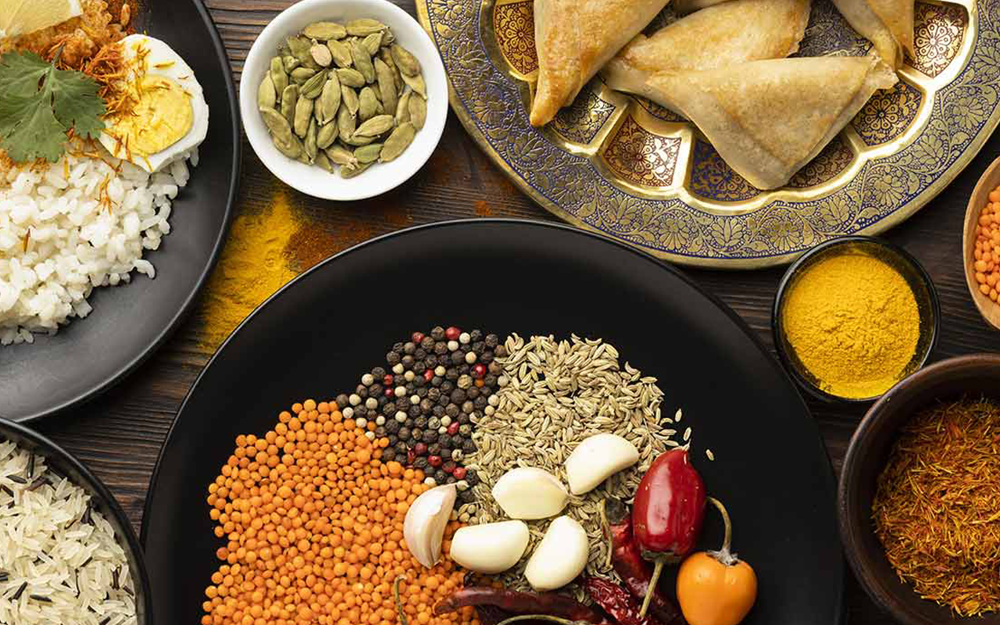

Gastronomía de India
RECETA DEL MES INDIA
Samosas
Ingredientes de las samosas
Para la masa (sustituible por masa comercial de empanadillas):
300 g de harina de trigo
1 cucharadita de semillas de comino
1 cucharadita de semillas de nigella o comino negro (opcional)
1 pizca de sal
50 ml de aceite de girasol
150 ml de agua
Para el relleno:
4 patatas (o 300 g de puré de patata)
1 guindilla roja
1 manojo de cilantro fresco
1 trocito de jengibre fresco
30 ml aceite de girasol
1 cucharada de semillas de comino
1 cucharada de semillas de mostaza
1 cucharada de semillas de cilantro
1 cucharadita de semillas de hinojo
150 g de guisantes
1/2 cucharadita de garam masala
1/2 cucharadita de chile en polvo
1/2 cucharada de comino en polvo
Sal
Abundante aceite para freír
Cómo hacer samosas
Comenzamos la receta preparando la masa de las samosas. En un bol amplio, ponemos 300 g de harina de trigo de todo uso y le añadimos 1
cucharadita de semillas de comino, 1 cucharadita de semillas de nigella y 1 pizca de sal. Añadimos 50 ml de aceite de girasol y finalmente
vamos añadiendo 150 ml de agua poco a poco y vamos amasando, pues quizá no la necesite toda, dependerá de la harina.
Una vez tenemos una masa lisa y elástica, aunque no necesariamente demasiado, la tapamos y la dejamos reposar una media hora.
Mientras la masa reposa, preparamos el relleno de las samosas.
Para el relleno, cocemos 4 patatas medianas con la piel en agua hirviendo durante unos 30 minutos o hasta que estén tiernas.
Las dejamos enfriar un poco, las pelamos y las aplastamos con un prensa patatas, con un tenedor o con un pasapuré. Otra opción es
utilizar directamente 300 g de puré de patata. Reservamos.
A continuación, picamos 1 guindilla roja, 1 manojo de cilantro fresco, rallamos 1 trocito de jengibre fresco y lo reservamos todo.
En un wok, calentamos 30 ml de aceite de girasol y cuando esté bien caliente, le añadimos 1 cucharada de semillas de comino,
1 cucharada de semillas de mostaza, 1 cucharada de semillas de cilantro y 1 cucharadita de semillas de hinojo. Dejamos que se tuesten y
desprendan el aroma.
A continuación, echamos la guindilla roja picada y el jengibre fresco y lo doramos todo un poco.
Añadimos 150 g de guisantes y los removemos para que se impregnen bien de todos los sabores.
Finalmente, añadimos las especias en polvo: 1/2 cucharadita de garam masala, 1/2 cucharadita de chile en polvo,
1/2 cucharadita de comino en polvo y lo removemos todo bien.
Echamos las patatas que tenemos machacadas y lo mezclamos todo bien para que se tuesten un poco y se reparta bien todo el sabor
de las especias. Le añadimos 1 cucharadita de sal, el cilantro fresco picado, mezclamos todo bien y apartamos el relleno del fuego.
Lo reservamos para que se vaya enfriando mientras estiramos la masa.
Dividimos la masa en porciones de unos 50 g, o más o menos grandes según el tamaño de nuestras samosas, y hacemos bolitas con ellas.
A continuación, las vamos estirando con forma ovalada y las dividimos a la mitad.
Con cada una de las mitades, formamos un cono, superponiendo un poco la masa en los laterales para que se sellen bien.
Cogemos el cono de masa con una mano y con una cuchara, le echamos una porción de relleno.
Hacemos lo mismo con todas las porciones de masa y las cerramos doblando la base y sellándolas formando una especia de pirámide.
Formamos todas las samosas de la misma manera y las vamos colocando en una fuente.
Una vez las tenemos todas listas, calentamos en una sartén abundante aceite para freír, de girasol o de oliva según preferencias,
y vamos friendo las samosas echando pocas de cada vez. Cuando estén doradas, las retiramos para un plato con papel de cocina para
retirar el exceso de aceite.
Una vez las tenemos todas fritas, las servimos acompañadas de un chutney o una salsa al gusto.
Audio India
Especialidades culinarias de India
La cocina india: una explosión de sabores y especies

La cocina india se caracteriza por ser una de las más ricas y variadas del mundo, gracias a su amplia variedad de sabores y especias que hacen que cada plato sea una auténtica explosión de sabor.
En realidad, la gastronomía india es una fusión de la propia de diferentes culturas, tradiciones y regiones, algo que se refleja en la gran variedad de platos y estilos de cocina que se encuentran a lo largo del país. Y es que, como es natural, cada región tiene sus propias especialidades y formas de cocinar.
Comer en la India
Un disfrute para los sentidos
Los indios suelen comer con las manos y tienen diversas explicaciones para hacer esto: consideran que la comida es divina y es necesario disfrutar de ella no solo con los sentidos del gusto, sino también con los del olfato, la vista y el tacto.